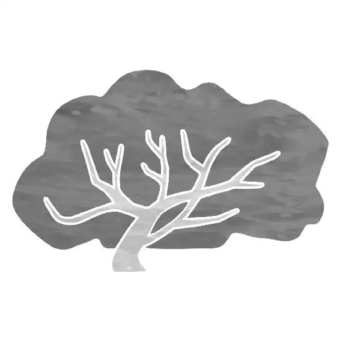

Moana and Maui shot through the water while Maui continued to randomly transform into a variety of figures. When they finally burst through to the other side, they crashed down into the shallow water beside the spire island.
“Whoo!” shouted Moana triumphantly. “We’re alive, we’re al—AAAGH!”
Moana turned to Maui, who had only half transformed. Now he had his normal body but the head of a huge shark!
“Listen,” started shark-headed Maui, “I appreciate what you did down there, took guts, but, uh—”
Moana nodded blankly. “Mm-hm, mm-hm, mm-hm.” She was trying to listen but was having a hard time taking the strange talking shark head seriously.
“Sorry, I’m trying to be sincere for once, and it feels like you’re distracted,” said Maui.
“No, nope,” Moana said coolly.
Maui stared at her suspiciously through his shark eyes. “You’re looking at me like I have a ...” He sighed, finally realizing. “Shark head.”
“Do you have a shark head?” Moana asked, trying to keep a straight face. “’Cause I didn’t even—”
“Agh! Just ... the point is, for a little girl ... child ... who had no business down there, you did me a solid... . But you also almost died ... and I couldn’t even beat that dumb crab. So chances of beating Te Kā? Bupkis. This mission is cursed.”
“It’s not cursed,” said Moana.
“Shark head,” said Maui, proving a point.
“It is not cursed,” said Moana.
She lifted Maui’s hook and placed it in his little flippers. The hook flashed, and he zapped back to his normal form. Moana smiled, but then Maui continued to uncontrollably transform into a series of different animals as his hook flashed and zapped.
He went from being a pig to a fish to a bug to a whale in the blink of an eye. Once he finally stopped changing form, his top half was back to normal, but his bottom half was shark.
“Cursed,” said Maui, standing up on his shark fins and looking at Moana with a deadpan expression.
Moments later, Moana and Maui were on the boat, feeling beaten down and exhausted. Maui had his hair wrapped up on top of his head in a bun and was somberly lying on his back. Moana looked down at the heart of Te Fiti inside her necklace, trying to figure out what to do next.
Maui, feeling hopeless and depressed, sang a strange-sounding tune to himself. “Hey, what can I say? Te Kā’s gonna kill us, gonna kill us ...”
“Can you at least try?” asked Moana, attempting to get him back on track.
Maui put a lazy finger on his hook and fritzed a few more times, changing into a variety of forms before turning back to his normal self. He started to sing again, this time louder. “Hey! Today’s our last day. Te Kā’s gonna kill us, gonna kill us.”
Unable to put up with any more of Maui’s negativity, Moana poked him in the side with the oar. “All right—break time’s over. Get up,” she ordered.
“Why?” asked Maui. “You gonna gimme a speech? Tell me I can beat Te Kā ’cause I’m Maui?”
Mini Maui protested Maui’s attitude with a stomp and scowl.
“Take a hike,” Maui said to the little tattoo. He pushed him over his shoulder. As Moana watched Mini Maui move to Maui’s back, she spotted the tattoo of the woman holding the baby that Tamatoa had been digging into.
“How do you get your tattoos?” Moana asked.
“They show up... when I earn ’em,” Maui replied.
“How’d you earn that one?” asked Moana. “What’s that for?”
Maui glanced back, noticing the one she was asking about. “That tattoo is man’s discovery of Nunya.”
“What’s Nunya?”
“Nunya business.”
Maui tried to lie back down, and Moana knocked him with her oar. “I’ll just keep asking. What’s it for?”
Maui didn’t respond, and Moana whacked him again.
“You need to stop doing that,” said Maui.
Moana paused for a moment, then reached out with the oar and tapped him on his man bun. “How’d you get the tattoo?” she asked.
When he didn’t answer, she gave him another whack.
“Back off,” Maui said, his irritation growing.
Moana hit him with the oar again. “Tell me what it is,” she insisted.
“I said back off.”
She whacked him again. “Is it why your hook’s not working? ’Cause—”
Fed up, Maui spun around and knocked Moana into the water, hard. Moana floated there, staring up at Maui in surprise. He looked down at his hook, embarrassed by what he had done, but he still felt angry.
He walked to the other side of the boat. Moana studied Maui for a moment, and then she climbed back in. She stared at him, trying to figure out what to do and say.
“You don’t wanna talk. Don’t talk,” she said, trying to converse with him as he sat with his back facing her. “You wanna throw me off the boat, throw me off. You wanna—you wanna tell me I don’t know what I’m doing? I know I don’t. I have no idea why the ocean chose me. You’re right. But I came anyway... . My people don’t even go past the reef... . But I am here ... for you ... and I want to help, but I can’t if you don’t let me.”
Moana looked at Maui, who sat silently, as if ignoring her. She started to turn away, but he began to speak.
“I wasn’t born a demigod ...”
Moana stopped and listened as Maui turned toward her.
“I was born human. My parents were human. They, uh, they took one look ... and decided ... they did not want me. They threw me into the sea. A baby. Like I was nothing.”
Moana looked at his tattoo and realized the lady pictured was Maui’s mother, tossing him away.
“Somehow I was found by the gods. They gave me the hook.” He gestured to his hook sitting on the edge of the boat. “They made me Maui. And back to the humans I went... . They needed islands, fire ... coconuts. Anything they could ever want. There I was.” Maui looked out at the water, lost in his memory, lost in sharing his story. “And they loved me. I was Maui ... the Great Maui.”
He turned and looked at Moana. She could see a deep sadness in his eyes and felt sympathy for him. Feeling vulnerable, Maui quickly looked away.
Moana eyed the tattoo of him being thrown into the sea. “Maybe the gods found you for a reason,” she said gently. “Maybe the ocean brought you to them because it saw someone who deserved to be saved.” Moana looked out at the rolling waves and then turned back to Maui. “The gods aren’t the ones who make you Maui. You are.”
Maui let her words wash over him and sink in as he tried to hide his emotions, uncomfortable with having revealed so much about himself. “Pretty good speech,” he said. He looked down to see Mini Maui giving him a hug. Maui hugged him back. “Okay, now it’s weird. Let’s get to work.”
Moana and Mini Maui helped him return to training, and this time Maui got better. He practiced using his hook and improved his skills, working hard to become stronger and stronger. Soon, Maui gained control of his shape-shifting powers and was able to transform as he wished.
Feeling confident, he turned into a giant hawk and slashed with his hook to cut a cliff in half. He landed on the boat and gave Moana a triumphant fist bump, thrilled to feel like his old self again.
Then Maui picked up the oar and offered it to Moana. The time had come for him to willingly teach her, so that she could become a master wayfinder. She was surprised and hesitated, but Maui nodded his head, holding the oar out to her, insisting. Moana smiled and accepted, feeling truly honored. She gripped the oar, more than ready to learn how to wayfind.
